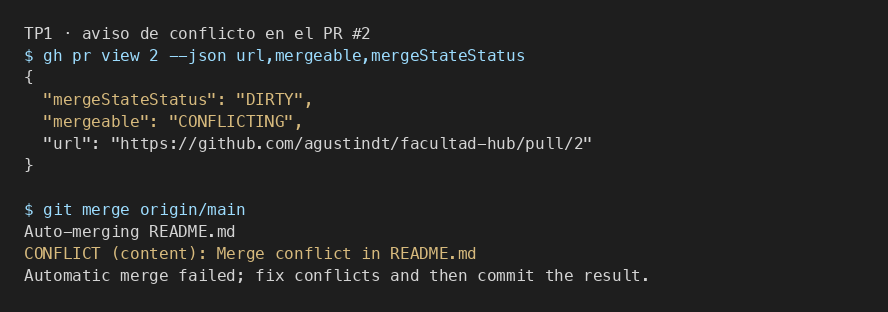
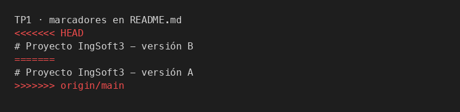
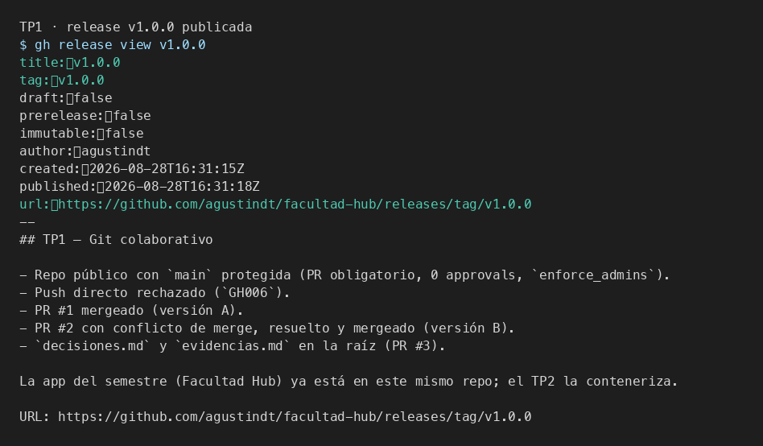
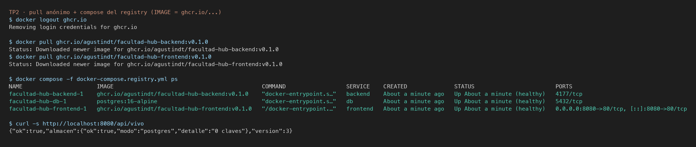
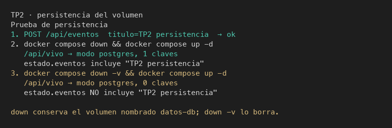
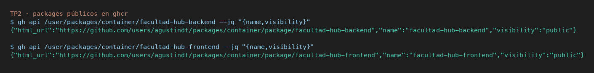
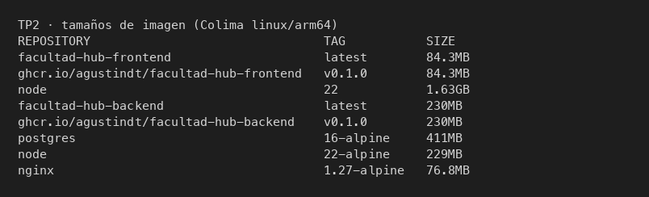
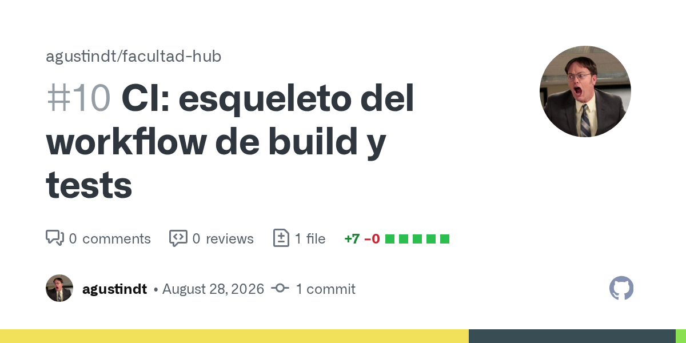
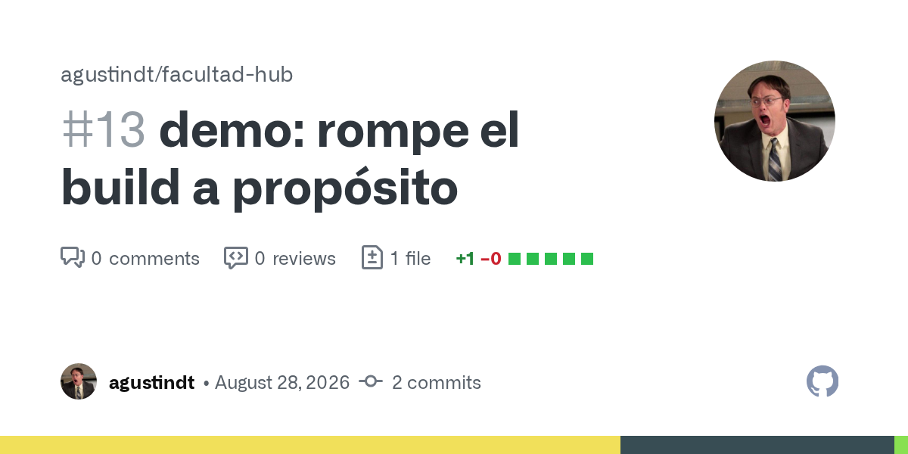

Facultad Hub — defensa P1 (TPs 1 a 4)
App propia: hub sobre un vault de Obsidian. Backend Node, frontend SPA, Postgres. Repo público, mismo artefacto todo el semestre.
Grupo A · puesto 25 · ~15:32 · legajo 2319308
Hoy, en este orden
| Paso | Peso | Qué vas a ver |
|---|---|---|
| TP1 Git | 5% | push GH006 · PR #2 · v1.0.0 |
| TP2 Docker | 40% | compose registry · .env · volúmenes |
| TP3 Plan | 10% | #6 → PR #10 → #5 → #4 |
| TP4 CI | 45% | PR #13 rojo→verde · badge |
| Tu caso | — | una pregunta sobre este repo |
Lo que tiene que estar listo
Hacé esto antes de sentarte
cd ~/Documents/github.com/facultad-hub git stash push -u -m "wip antes de la defensa" colima start docker compose -f docker-compose.registry.yml up -d docker compose -f docker-compose.registry.yml ps
El reset --hard del paso 1 borra cambios sucios. Stash primero.
IMAGE tiene que decir ghcr.io — no el nombre local
ghcr.io/agustindt/facultad-hub-backend:v0.1.0ghcr.io/agustindt/facultad-hub-frontend:v0.1.0- db healthy
Si IMAGE dice facultad-hub-backend sin ghcr, levantaste el compose que buildea. No vale.
Push directo a main — tiene que fallar
Hacé
echo "prueba-defensa" >> README.md git add README.md git commit -m "prueba" git push origin main
Esperado: GH006 · protected branch hook declined
git reset --hard HEAD~1
Decí
Main está protegida con enforce_admins: ni el dueño pushea. Todo entra por PR. Así un viernes no se rompe main sin que se vea.
Pregunta del PDF
¿Por qué el flujo está armado así? — Porque main es el contrato. Confianza no reemplaza historial. El PR obliga a ver el diff, el conflicto y ahora el CI.

Git no eligió: misma línea, dos ramas nacidas de main
Resultado
| PR #1 | versión A · mergeado primero |
| PR #2 | mergeable: CONFLICTING · DIRTY |
| Resolución | versión B (la rama que estaba mergeando) |
Decí
Las dos ramas salieron de main y cambiaron la primera línea del README. Git fusiona solo regiones distintas. Para que no apareciera: tocar líneas distintas, o que B naciera después de mergear A.


v1.0.0 congela el TP1
Decí
Semver MAJOR.MINOR.PATCH. v1.0.0 es la primera entrega estable. Cada TP congela el suyo: v2, v3, v4. Si después corrijo, muevo el tag y lo cuento en decisiones.md.
Tags en este repo
| v1.0.0 | TP1 · protecciones, conflicto, PRs |
| v2.0.0 | TP2 · registry público + pull anónimo |
| v3.0.0 | TP3 · esqueleto CI, cierra #6 |
| v4.0.0 | TP4 · pipeline, gate, badge |

Imágenes públicas · IMAGE = ghcr.io/…:v0.1.0
Hacé
docker compose -f docker-compose.registry.yml ps
Columna IMAGE: ghcr.io, no el nombre local. db healthy.
Decí
No las construí acá: las bajé de ghcr. Las armé con mis Dockerfiles multi-stage y las publiqué. Cualquiera clona, copia el .env.example y levanta. Probé pull anónimo: docker logout + pull + este compose.
Pregunta del PDF
¿Por qué está armado así y qué pasa si falta una pieza? — Sin .env no hay password ni vault. Sin volumen, down pierde Postgres. Sin healthcheck, el back habla con una base que todavía no escucha. Sin el resolver de nginx, recrear el back deja 502. Sin ghcr público, este compose no baja nada.

.env no viaja · el volumen sí (hasta down -v)
Hacé
git ls-files .env # (vacío = no está en el repo) docker volume ls # facultad-hub_datos-db # facultad-hub_datos-hub
Decí
El secreto no va en el repo: .env.example sí, .env en gitignore. El volumen datos-db sobrevive a down; down -v lo borra. Las notas son bind mount: Obsidian las abre, no viven en Postgres.


Por qué dos etapas · arranque en máquina limpia
Tamaños medidos (Colima, linux/arm64)
| node:22 (SDK) | 1.63 GB |
| node:22-alpine | 229 MB |
| backend final | 230 MB |
| frontend (nginx alpine) | 84.3 MB |
Sin multi-stage te llevás npm, cache y toolchain. CMD y no ENTRYPOINT: se puede pisar el comando (compose run backend node --test).
Arranque (dos comandos, no uno)
cp .env.example .env docker compose up -d # buildea # o, en la mesa: docker compose -f docker-compose.registry.yml up -d
El secreto es lo único que no viaja. No es un defecto del README.

Tarea cerrada → PR → commit → historia → épica
Clics, en este orden
- Project Board → Done → #6
- Issue #6 (cerrada) → linked PR #10
- PR #10 · pestaña Commits
- Historia #5 (sigue abierta)
- Épica #4
Decí
Closes #6 cerró la tarea al mergear. La historia sigue abierta: tests y artefacto son TP5. El bug #8 está al costado: defecto de algo ya entregado (el 502 de nginx), no trabajo que faltaba adentro de la historia.
Pregunta del PDF
¿Cómo se conecta lo planificado con lo hecho? — Del código al pedido: el commit del #10 cierra la #6, que cuelga de la #5, que cuelga de la #4. Un Trello desconectado del repo no te da esa vuelta.
Jerarquía (Project público)
| #4 épica | Pipeline DevOps completo | abierta |
| #5 historia | CI en cada PR | abierta · sprint 1 |
| #6 tarea | Escribir el workflow | Done · PR #10 |
| #7 tarea | Artefacto de tests | Todo · TP5 |
| #8 bug | Front sin lista / 502 | al costado |
Sprint 7 días (28/8–3/9) · WIP 2 = personas+1. Historia mal escrita diagnosticada en decisiones.md.

El gate actuó: rojo → BLOCKED → fix → verde → merge
Mostrá el PR #13
| 1º commit | rompe: paquete estonoexiste-tp4 |
| corrida | failure build-backend · run 33191765998 |
| 2º commit | fix: saca el paquete |
| corrida | success · run 33191905516 |
Decí
Dos jobs en paralelo, sin needs:: cada uno en su runner, cada uno con su cache. Construyen los Dockerfiles del TP2, no un npm aparte. Rompí el build con un paquete que no existe porque este stack no compila: un import inventado no cae en docker build.
Pregunta del PDF
¿Qué frena un cambio y qué lo destraba? — Lo frenan build-backend o build-frontend en rojo, o una rama atrasada (strict: true). Lo destraba un commit que hace pasar el build, o Update branch. El cache no frena: si desaparece, tarda más y sigue verde.

Main exige hoy
- PR obligatorio · 0 approvals ·
enforce_admins - required checks: build-backend + build-frontend
strict: true→ Update branch si main se movió (lo vi en el PR #12)
El pipeline verifica las mismas imágenes que se despliegan
Qué hay en el YAML
- Triggers:
pull_requestypusha main - Jobs
build-backend/build-frontend· sinneeds: - Cache GHA
mode=max· scope distinto por job (si no, el último pisa al otro) - Segunda corrida del PR #11: capas
CACHED— run 33191229066
Si el cache desaparece el pipeline sigue en verde: tarda más, no falla.
Badge en el README
Si pregunta CI vs pipeline
CI es integrar seguido en main. El pipeline es la máquina. Podés integrar todos los días a mano (CI sin pipeline) o tener un YAML que corre una vez al mes (pipeline sin CI).
Tu caso — lo que se ve en este decisiones.md
| Si pregunta | Contestás |
|---|---|
| Los cuatro TPs el 28/8 | La app ya existía. Ese día armé el proceso DevOps. No fabriqué historial semanal. |
| ¿Por qué esta app si es grande? | Lo declaré: no cumple el CRUD chico. La defensa es el 50% y esta app la uso. |
| El 502 | nginx cacheó la IP de backend al arrancar. Recrear el contenedor = 502. Arreglo: resolver 127.0.0.11 + proxy_pass por variable. Bug #8. |
| ¿Notas en Postgres? | No. Fuente de verdad = markdown. Postgres guarda lo que no es nota (repaso, eventos, log de IA). |
| ghcr privado / token | El token no tenía write:packages. Packages nacen privados; visibilidad a mano. Lo comprobé con logout + pull anónimo. |
| ¿Qué hizo la IA? | Cursor: YAML, Dockerfiles, redacción. Yo verifiqué: GH006, persistencia, #13 BLOCKED, CACHED. No delegué: versión B, 0 approvals, notas fuera de PG, 7 días, WIP 2, nombres de los jobs. |
| Sprint / WIP | 7 días: form el 2/9, defensa el 4/9. WIP 2 = personas+1. A diez deja de limitar. |
Si se traba
Push no rechaza
No improvises. «main tiene que devolver GH006». Mostrá la captura de evidencias.
IMAGE no dice ghcr.io
Levantaste el compose que buildea. Cortá y corré:
docker compose -f docker-compose.registry.yml ps
Se acaba el tiempo
Priorizá TP4 (45%). Si hay que recortar, recortá TP1. Si la máquina no arranca pero lo sabés explicar, es 1, no 0.